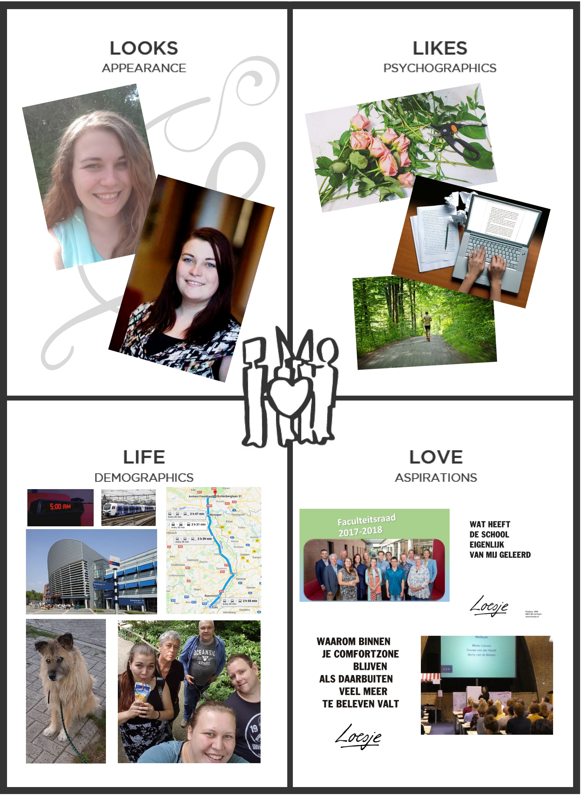

About me
Mijn naam is Mieke van Corven. Ik volg sinds september 2018 de minor Smart Industy aan de HAN in Arnhem. Via dit portfolio wil ik laten zien hoe ik mij in dit half jaar ontwikkel op het gebied van de verschillende competenties binnen deze minor. Om mijn weg hierin te volgen kunt u via het menu navigeren naar de verschillende competenties. Natuurlijk begint iedere weg met een startpunt en op deze pagina vindt u dat van mij. In onderstaande video komt u erachter wat me gedreven heeft voor deze minor te kiezen. Verder vindt u op deze pagina een uitleg over wie ik ben en waar ik naar toe werk, samengevat in twee duidelijke modellen.
Naast mijn eigen invulling heb ik ook andere gevraagd hoe zij mij voor zouden stellen. Het resultaat hiervan heeft u vast al boven aan de pagina gezien.
Ten slotte wil ik u graag verwijzen naar de teampagina waar ik samen met Jamie van Brienen u graag op de hoogte houdt van de stappen die wij maken in ons project.
Bedrijfskundige in bedrijfsmodellen
Doormiddel van de onderstaande modellen hoop ik een beter beeld te geven over wie ik ben en wat mij drijft. In het personagrid ziet u in een oogopslag mijn leven in afbeeldingen. Het business model geeft een betere uitleg over wie ik ben en hoe ik mij opstel tijdens de minor.
Klik op de afbeelding om deze te vergroten.
{kind=link}